Handcrafted Textiles,
Made to Be Lived With.
Each textile in our permanent collection is hand-dyed in small batches using pure mulberry silk, Belgian flax linen, and GOTS-certified organic cotton dipped in botanical extracts.
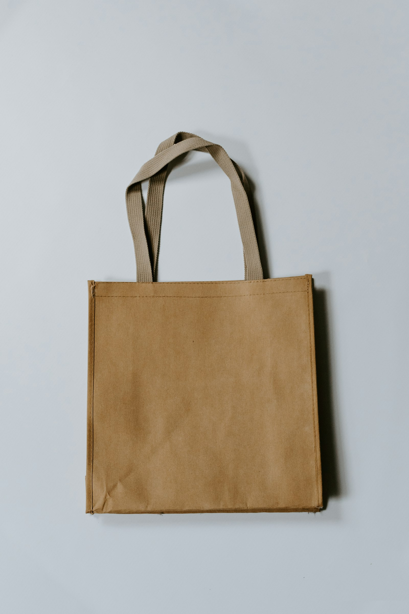
Apparel & Silks
Flowing organic silhouettes designed to drape naturally while showcasing intricate wax crackle lines and ombre dips.
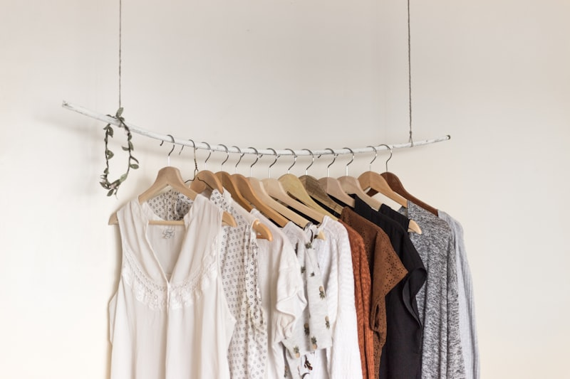
Batik CantingCerulean Haori Kimono
Wax-resist coastal waves hand-drawn with copper canting, dipped 14 times in Sukumo indigo.
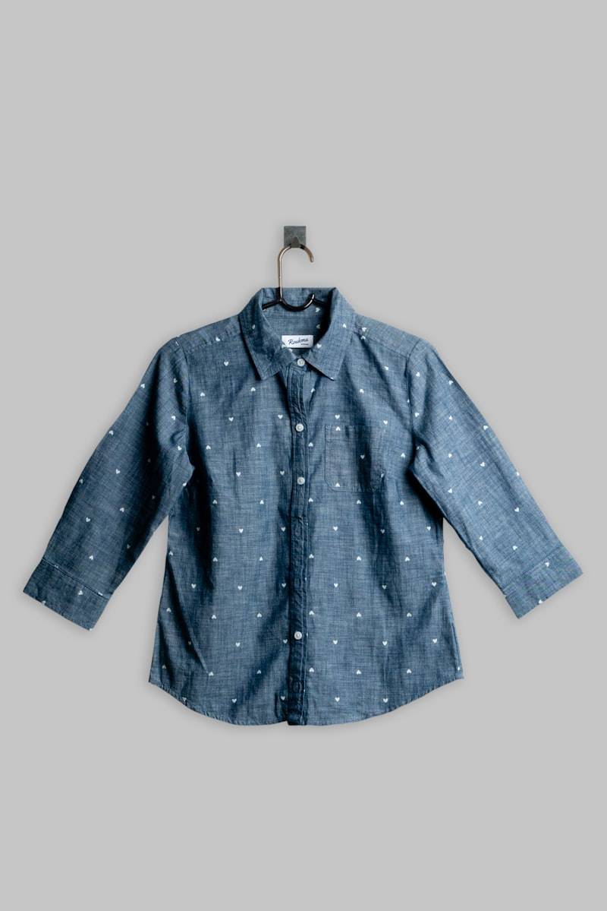
Botanical DipSolar Strata Overshirt
Relaxed tailored fit dyed with foraged autumn marigold petals and madder root.
Arashi Storm Scarf
Pleated diagonal wave pattern mimicking monsoon rainfall on featherlight silk.
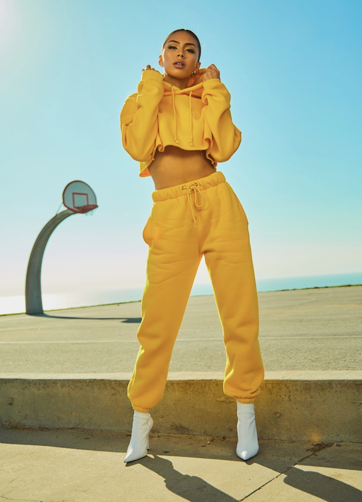
Ombre ImmersionMadder Gradient Dress
Multi-stage vertical gradient immersion transition from soft peach to crimson.
Home Textiles & Living Decor
Bring calming organic geometry and earthy botanical pigments into your sanctuary rooms.
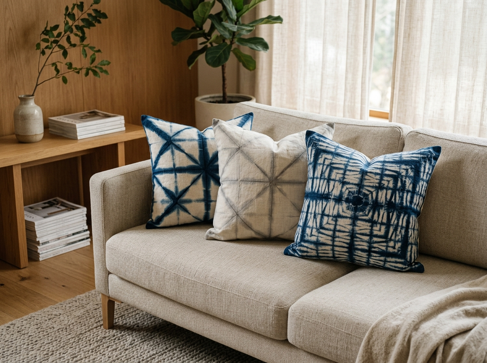
Itajime Wood ClampItajime Linen Cushion Trio
Accordion linen clamped with cherrywood blocks and dipped in iron & indigo.
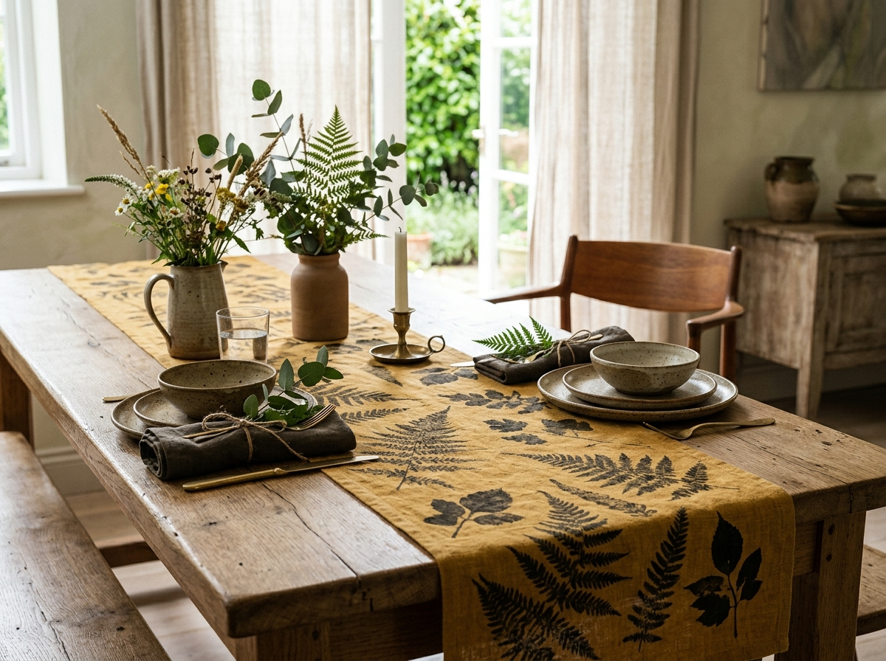
Botanical PrintSolar Dining Runner
Warm golden turmeric foundation overlaid with iron-mordanted leaf silhouettes.
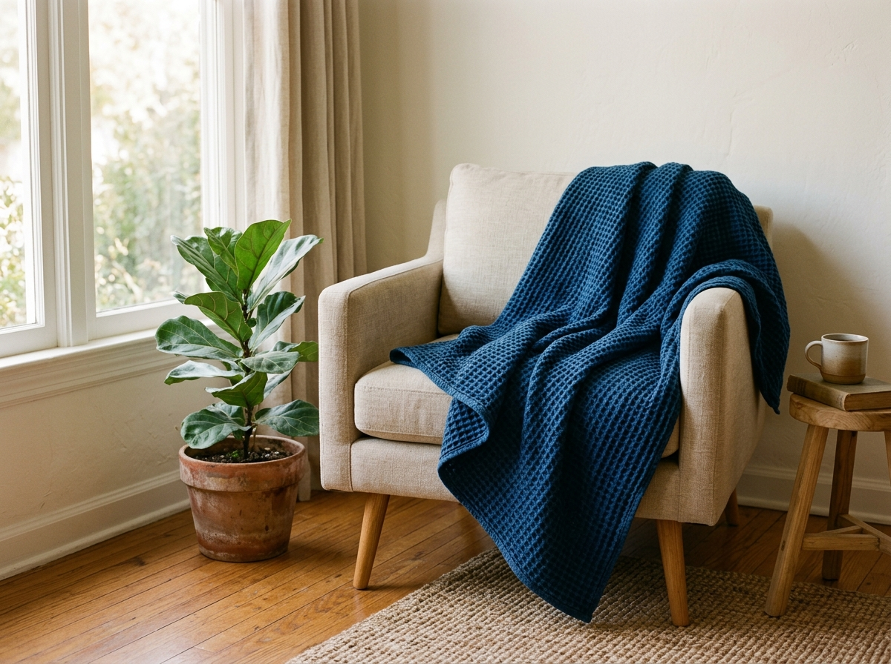
Organic WaffleDeep Indigo Waffle Throw
Tactile honeycomb weave dyed through repeated vat aerations to midnight blue.
Framed Textile Wall Art
Fine art collectors editions mounted behind UV-protective museum glass in solid white oak frames.
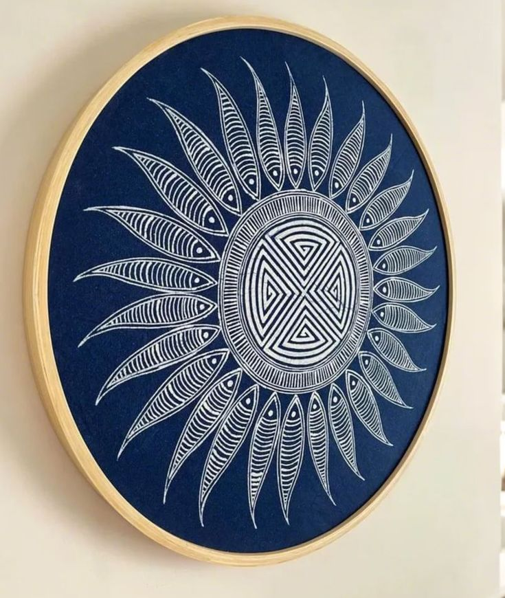
Limited 1/5 EditionCelestial Mandala Silk
Three-layer wax resist with concentric geometric fractal blooms, signed by Maya Lin.
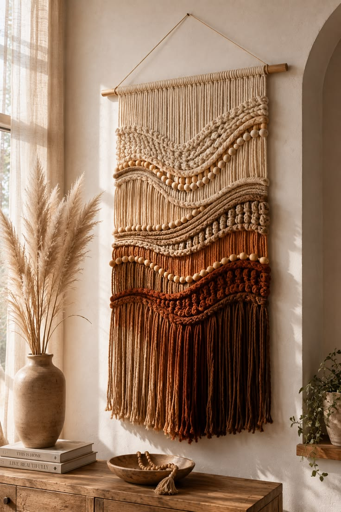
Hand-Loomed FlaxTerracotta Strata Tapestry
Raw edge hanging banner displaying geological earth tones from iron galls and madder.
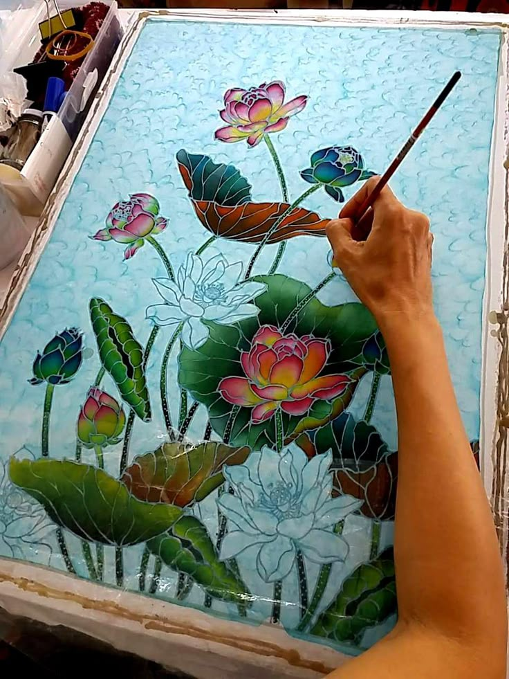
Gold Leaf & IndigoBotanical Bloom Panel
Canting-drawn floral botanical anatomy layered with 24k gold leaf accents on aged indigo silk.
Explore Our Four Color Stories
Click each botanical swatch to explore how our natural pigment formulas are foraged and blended.
The Living Blue Fermentation
Natural indigo chemically bonds into the protein core of mulberry silk and flax cellulose fibers. We maintain four active vats fed with dates and lime.
The Signatures of Master Craftsmanship
Subtle physical details that distinguish true slow textile craft from industrial printing. Every surface, edge, fiber, and dye carries evidence of the human hand.
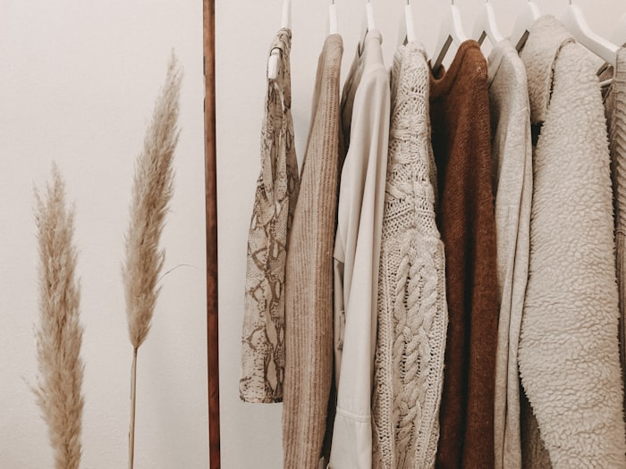
Artisanal Wax Crackle
Marbled vein lines created by deliberate hand-bending of cooled wax before secondary dye dips. Each crack follows a naturally unpredictable path, making every textile surface unique.
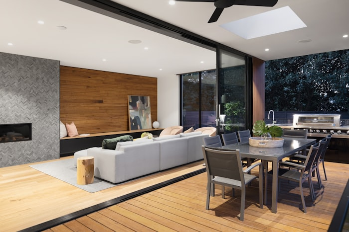
Hand-Rolled Selvedge
Edges hand-rolled and blind-stitched with pure silk thread by our atelier seamstresses.
Pure Material Selection
Unbleached mulberry silk, Belgian flax cooperatives, and GOTS organic cotton mills.
Non-Toxic Mineral Fixing
Permanently fixed using food-grade potassium alum and oak gall tannins. Gentle on skin while helping botanical pigments remain deeply bonded to the fiber.
Imperfection is the Signature.
Slight variations in color, crackle, edge tension, and dye density are not defects. They are physical evidence that the textile has passed through real hands, real materials, and a deliberately slow process.
Custom Color Matching & Bespoke Commissions
Need a specific colorway for your living room, a custom bridal ensemble, or an architectural wall tapestry?